Locații de nuntă în Oradea
- locații în director
- 22
- cu cazare în registrul SITUR
- 4
- medie ponderată Google
- 4,4 / 5
- evaluări Google
- 15.123
Cum alegi o locație în Oradea
În Oradea poți începe comparația cu ARIS Boutique Hotel & SPA (hotel), La Vie est Belle Oradea (local pentru evenimente), Hotel Fantazia Oradea - Self Check In & Out (hotel). Aceste proprietăți apar în primele poziții când luăm în calcul împreună nota și numărul de evaluări Google. Salvează adresele care vă interesează pentru a le așeza apoi alături în fișa de comparare a ofertelor.
Pentru partea de afară, avem o descriere a spațiului folosit la evenimente la Opera Events Oradea — Ceremonie în grădină · Grand Palace Restaurant Evenimente, Nunti, Botezuri — Evenimente private pe terasă. La vizionare, cere schița pentru numărul vostru de persoane, inclusiv locul unde vor sta muzicienii și pe unde intră invitații.
Dacă vin rude de departe, ARIS Boutique Hotel & SPA are o unitate de cazare asociată în registrul SITUR. Înregistrarea pentru Aris Boutique Hotel & Spa cuprinde 50 de locuri de dormit în 20 de spații de cazare. Întreabă câte camere pot fi păstrate pentru aceeași noapte înainte să trimiți invitaților detaliile de rezervare.
Locații pentru vizionare
Ordinea ține cont de nota Google și de numărul evaluărilor. Cum calculăm ordinea
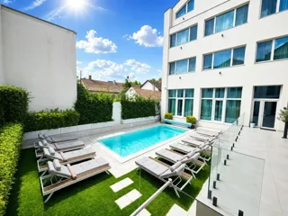
Fotografie a locației · Sursa fotografiei Oradea · Hotel
ARIS Boutique Hotel & SPA
Hotel boutique pe o stradă liniștită din Oradea, nota 5 din 158 de evaluări: camere mari, piscină exterioară și mic dejun inclus.
Strada Lămâiţei 7, 410160 Oradea+40 773 773 550Hartă ilustrată Oradea · Local pentru evenimente
La Vie est Belle Oradea
La Vie est Belle Oradea. Un părinte descrie la La Vie est Belle două terase și o cameră pentru alăptare sau schimbarea copilului, cu baie proprie.
Calea Clujului 82, 410060 Oradea+40 773 751 737Hartă ilustrată Oradea · Hotel
Hotel Fantazia Oradea - Self Check In & Out
Hotel cu cazare pe cont propriu pe Bulevardul Decebal din Oradea, 4,9 din 116 evaluări și băuturi din partea casei. Util pentru invitați.
Bulevardul Decebal 102, 410189 Oradea+40 741 471 562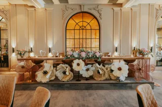
Fotografie a locației · Sursa fotografiei Oradea · Sală de nunți
Palazzo Grand Hall
O invitată la o nuntă organizată în octombrie la Palazzo Grand Hall își amintește că fiecare masă a avut un ospătar dedicat.
Strada Ciheiului 67, Oradea+40 740 205 282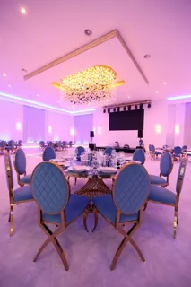
Fotografie a locației · Sursa fotografiei Oradea · Local pentru evenimente
Artemis Leto EventsHall
Artemis Leto EventsHall. Cere să stabilești cine îi anunță pe miri că urmează servirea și cu cine discută părinții dacă masa familiei trebuie rearanjată.
Calea Aradului 91P, 410224 Oradea+40 359 732 500Hartă ilustrată Oradea · Local pentru evenimente
Celeste Events
Celeste Events, Oradea. O familie care a sărbătorit aici botezul fiicei a apreciat sala încăpătoare și felul în care s-au servit preparatele.
Strada Depozitului 35, 410561 Oradea+40 725 530 927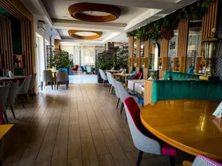
Fotografie a locației · Sursa fotografiei Oradea · Local pentru evenimente
Restaurant Solay by CK28 (Oradea)
Restaurant Solay by CK28 (Oradea), Oradea. La Solay, patruzeci de locuri sunt indicate pe terasă și cincizeci și unu în interior.
DC54 1442, 410542 Oradea+40 359 444 499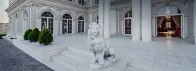
Fotografie a locației · Sursa fotografiei Oradea · Local pentru evenimente
Opera Events Oradea
Opera Events Oradea, Oradea. La Opera, alegerea furnizorilor merită lămurită înainte de semnarea contractului.
Calea Aradului 91A, 410223 Oradea+40 721 123 099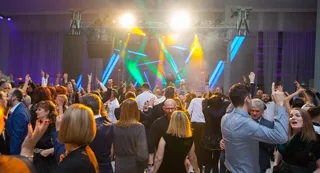
Fotografie a locației · Sursa fotografiei Oradea · Sală de nunți
Ambasador Oradea
Ambasador Oradea, Oradea. Este o amintire a acelei colaborări, nu un beneficiu pe care îl poți presupune inclus.
Calea Aradului 87, 410224 Oradea+40 741 222 000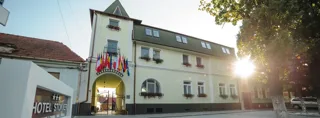
Fotografie a locației · Sursa fotografiei Oradea · Hotel
Hotel Stokker
Hotel Stokker, Oradea. Pentru un weekend la Stokker, alegerea camerelor pentru părinți poate conta la fel de mult ca alegerea terasei.
Parcul Petőfi Sándor 16, 410160 Oradea+40 359 444 995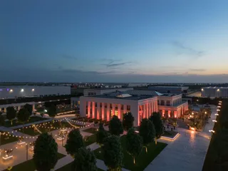
Fotografie a locației · Sursa fotografiei Oradea · Local pentru evenimente
Armonia Venue
Două săli de evenimente în Oradea, 1.183 de evaluări: ce spun invitații despre servire și masa mirilor, plus întrebări utile la vizionare.
Strada Anghel I. Saligny, 417498 Oradea+40 720 144 061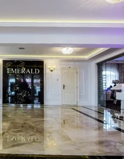
Fotografie a locației · Sursa fotografiei Oradea · Local pentru evenimente
Emerald
La Emerald, un cuplu amintește întâlnirea în care a stabilit detaliile și faptul că preparatele de la petrecere au corespuns degustării.
Strada Ovid Densușeanu 78/A, 410237 Oradea+40 744 522 960Hartă ilustrată Oradea · Local pentru evenimente
Vine Summer Garden & Grill
La Vine Summer Garden & Grill din Oradea, o familie a revenit pentru al doilea botez și își amintește cu plăcere de mâncare și de servire.
Strada Cloșca 50, Oradea+40 741 640 690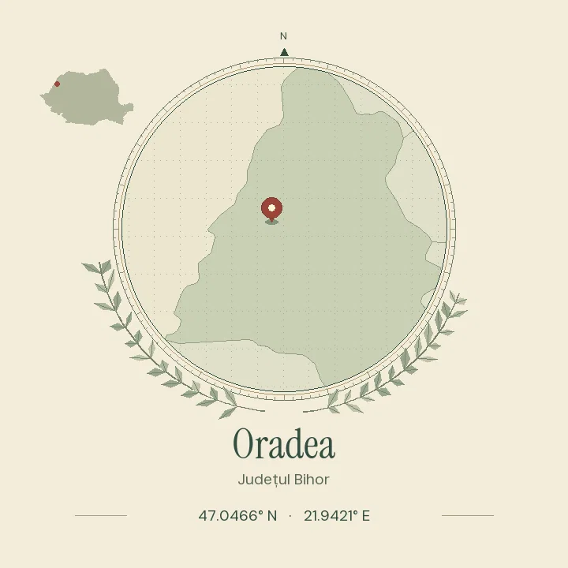
Hartă ilustrată Oradea · Local pentru evenimente
Restaurant Majestic
Restaurant Majestic, Oradea. Un participant la evenimente din Oradea descrie la Majestic o sală spațioasă și o echipă atentă la detalii.
Strada Panait Cerna 7, 410000 Oradea+40 753 207 151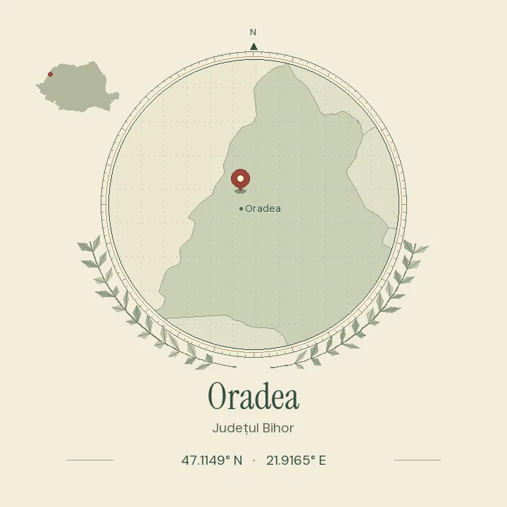
Hartă ilustrată Oradea · Grădină
Garden Hill
Grădină pentru petreceri în Oradea, apreciată pentru flori și spațiul pentru copii, dar cu reclamații despre viespi în 2026. Ce să întrebați.
4W78+XH, Oradea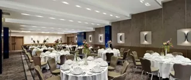
Fotografie a locației · Sursa fotografiei Oradea · Hotel
DoubleTree by Hilton
DoubleTree by Hilton, Oradea. Pentru o pauză la piscină înaintea petrecerii, verifică exact ce include tariful camerei la DoubleTree din Oradea.
Aleea Ștrandului 9, 410051 Oradea+40 259 259 259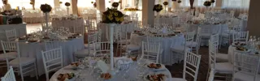
Fotografie a locației · Sursa fotografiei Oradea · Local pentru evenimente
Boema Events
Boema Events. La sala mică, un invitat a remarcat antifonarea bună pentru muzică, dar a ieșit la aer pe trotuar și spune că i-a lipsit o terasă.
Calea Clujului 111, 410522 Oradea+40 725 970 885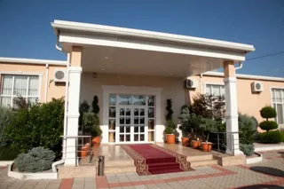
Fotografie a locației · Sursa fotografiei Oradea · Sală de nunți
Cristal Garden
Sală de nunți din Oradea cu grădină, dar recenzii 2025–2026 critice despre căldură, meniu impus și toalete. Ce să verifici.
Strada Ciheiului 138, 410600 Oradea+40 744 823 758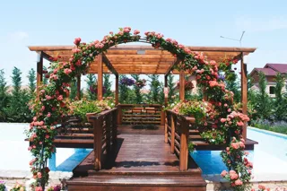
Fotografie a locației · Sursa fotografiei Oradea · Sală de nunți
Pandora Palace
Pandora Palace, Oradea. Pentru o familie care se gândește să înceapă seara în foișor, e un reper bun ca să ceară traseul complet până la mese.
Str. Ogorului 141A, 410554 Oradea+40 743 183 690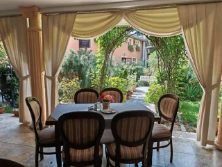
Fotografie a locației · Sursa fotografiei Oradea · Local pentru evenimente
Grand Palace Restaurant Evenimente, Nunti, Botezuri
Restaurant de evenimente în Piața 1 Decembrie din Oradea, cu terasă, grădină și sală mică pentru botezuri. Ce să fixezi în contract.
Piaţa 1 Decembrie 12, 410068 Oradea+40 748 228 822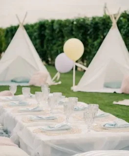
Fotografie a locației · Sursa fotografiei Oradea · Local pentru evenimente
Dacardi Events
Săli de nuntă cu grădină japoneză și bar pe acoperiș în Oradea, până la 150 de persoane după un invitat. Verifică în contract exclusivitatea datei.
Calea Sântandrei 48, 410238 Oradea+40 799 868 948Fotografie a locației · Sursa fotografiei Oradea · Hotel
Hotel Continental Forum Oradea
Salonul Belvedere de la etajul opt, Oradea: 180 de locuri și terasă panoramică de 300 m². Critici recente la piscină și parcare.
Aleea Ștrandului nr. 1, 410051 Oradea+40 372 598 800
Întrebări despre locațiile din Oradea
Unde pot dormi invitații în Oradea?
În registrul de cazare SITUR găsim ARIS Boutique Hotel & SPA (50 de locuri de cazare), Hotel Stokker (25 de locuri de cazare), DoubleTree by Hilton (294 de locuri de cazare). Verifică ce camere sunt libere pentru noaptea evenimentului.
Ce spații sunt documentate pentru evenimente în aer liber în Oradea?
Opera Events Oradea — Ceremonie în grădină. Grand Palace Restaurant Evenimente, Nunti, Botezuri — Evenimente private pe terasă. Dacardi Events — Evenimente în grădină.
Ce tarife de meniu au publicat locațiile din Oradea?
Restaurant Majestic — Pachet de nuntă publicat pentru 2026–2027, De la 285 lei/persoană; reducere anunțată de 10% vineri sau duminică. Oferta operatorului. Verifică în oferta pentru data voastră dacă intră băuturile, TVA-ul și închirierea spațiului.
Care locație din Oradea are cele mai multe evaluări Google?
Hotel Continental Forum Oradea are 4.056 de evaluări în profilul Google folosit la documentare. Evaluările acoperă și alte experiențe la proprietate, inclusiv vizitele fără eveniment.
Unde apare o intrare accesibilă în Oradea?
Profilurile Google indică o intrare accesibilă la Palazzo Grand Hall, Artemis Leto EventsHall, Opera Events Oradea. Pentru o cununie în exterior, cere detalii despre traseul dintre intrare și zona cu scaune.
Vizionări în apropiere
- Sânmartin · 1 locație. Între Restaurant Solay by CK28 (Oradea) și Pensiunea Casa Porojan sunt 3,3 km în linie dreaptă.
- Apateu · 1 locație. Între Cristal Garden și Pensiunea Apateu 167 Bihor sunt 5,5 km în linie dreaptă.
- Borș · 1 locație. Între Garden Hill și Hotel Iris sunt 7,4 km în linie dreaptă.